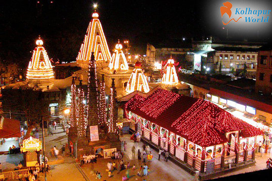

I came from a city called Kolhapur which is in the state of Maharashtra of Iindia. The city is located on the banks of Panchaganga River. Kolhapur is known for the hostoric city of Maharashtra. It is known for the 'Mahalaxmi Temple', a Hindu pilgrimage site. People of kolhapaur. The city particularly known for the Kolhapuri chappal, a hand-crafted buffalo leather slipper that is locally tanned using vegetable dye. kolhapur is also well known for delicious and spicy non-vegetarian dishes like "Mutton Thali".
You will hardly find more chilled out people than the ones in Kolhapur.Surely, there will be attitude problems, but people are really good at heart and co-operative at times. Kolhapur people or "Kolhapurkars" are always proud of their city. There is a famour slang in Marathi language that they use,"Jagat Bhari amhi Kolhapuri" which means "We kolhapur people are best in the World".
Kolhapur is an inland city located in south-west Maharashtra state, Location of Kolhapur with respect to big cities of India,
Kolhapur's climate is a blend of coastal and inland elements common to Maharashtra. The temperature has a relatively narrow range between 10 °C to 35 °C. Summer in Kolhapur is comparatively cooler, but much more humid, than neighbouring inland cities. Maximum temperatures rarely exceed 38 °C and typically range between 33 and 35 °C. Lows during this season are around 24 °C to 26 °C. Kolhapur experiences winter from November to February. The winter temperatures are warmer than other cities in Maharashtra such as Pune and Nashik. Lows range from 9 °C to 16 °C while highs are in the range of 26 °C to 32 °C due to its high elevation and being adjacent to the Western Ghats. Humidity is low in this season making the weather much more pleasant.
Mahalaxmi Temple, Kolhapur
It’ll take you around 2–3 days to just visit the tourist spots. You can complete inner-city attraction in one day.
Kolhapur is a foodie paradise. Kolhapuri food is world famous for its taste Traditional Delicacies. Misal Pav, The sumptuous and filling breakfast dish tastes like nowhere else in the country. Traditionally a mixture of boiled moth beans, potatoes, farsan, sev and kat, a spicy soup like gravy made with garam masala, onions, tomatoes, garlic, ginger and dry and wet coconut. Batata Wada Pav, The kolhapuri wada pav is as bigger sized batata wada served with typical bread slice with chutney & fried green chillies. Mutton dishes, Kolhapur is known for non-vegetarian meal. Mutton Fry and Mutton Masala Thalis with Masala Curries are heaven to Kolhapur People. Street food at the evenings and birthday parties is youngsters choice over fancy restaurants
Table below shows the top 3 favourite places to eat Misal, Vada-pav and Mutton Dish
| Rank | Misal | Vada Pav | Mutton |
|---|---|---|---|
| 1 | Hotel Aahar | Sheetal Vada Center | Hotel Mahadev |
| 2 | Vijay Misal | Balkrishna Vada | Hotel Meghdut |
| 3 | Fadtare Misal | Anega Vada-Pav | Prachi Hotel |